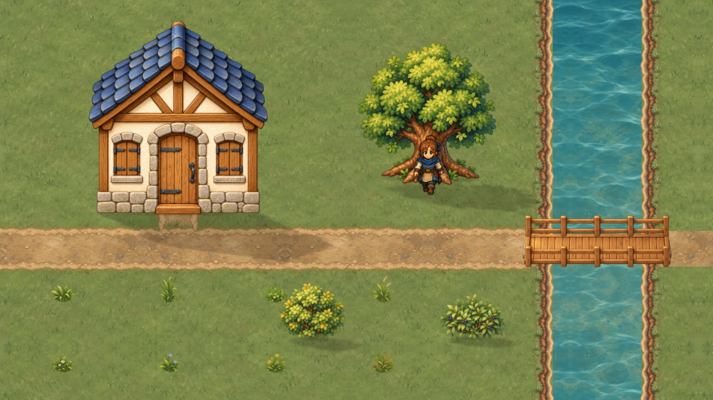

Долина начинается
с деталей.
Восемь пучков травы и цветов, два куста, дерево, покрытия, края тропы и берега, мост и дом. Каждый элемент существует отдельно — участок собран из этих же модулей.


Кадр не загрузился. Откройте страницу с сохранённой папкой native.
Один набор, разные места
В листах можно проверить целые силуэты на трёх фонах. В участке — масштаб двери, прямую реку, берег перед водой, настил над рекой и перекрытие героя деревом. Сетка 24 задаёт основания; крона и крыша могут выступать за них.
Границы этого этапа
Это настоящие PNG отдельной витрины Godot, а не живая карта. Старый герой и снимок HUD из VART-002 служат линейкой. Здесь ещё нет анимации воды, коллизий, production-атласа или замера FPS. Повторы материала зеркальные; полный набор бесшовных переходов готовится отдельно.
28 отдельных модулей и нарезка
PNG нарезаны Godot по измеренным областям без художественной обработки. Большие исходники и промпты сохранены отдельно; эти PNG пока не подключены к игре.